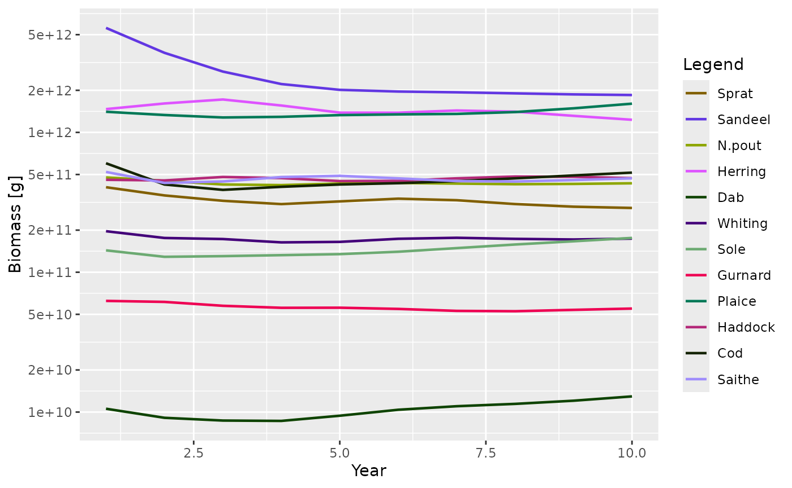

Exploring the Simulation Results
Source:vignettes/exploring_the_simulation_results.Rmd
exploring_the_simulation_results.RmdIntroduction
In the sections on the multispecies model and on running a simulation we saw how to set up a model and project it forward through time under our desired fishing scenario. The result of running a projection is an object of class MizerSim. What do we then do? How can we explore the results of the simulation? In this section we introduce a range of summaries, plots and indicators that can be easily produced using functions included in mizer.
We will use the following MizerSim object for these examples, where the effort array is the one we created in the previous section on running a simulation:
sim <- project(NS_params, effort = effort_array, dt = 0.1, t_save = 1)
Accessing the simulation results
The projected species abundances at size through time can be obtained with N(sim). This returns a three-dimensional array (time x species x size). Consequently, this array can get very big so inspecting it can be difficult. In the example we have just run, the time dimension of n has 10 rows (one for the initial population and then one for each of the saved time steps). There are also 12 species each with 100 sizes. We can check this by running the dim() function and looking at the dimensions of the n array:
## [1] 10 12 100To pull out the abundances of a particular species through time at size you can subset the array. For example to look at Cod through time you can use:
N(sim)[, "Cod", ]
This returns a two-dimensional array: time x size, containing the cod abundances. The time dimension depends on the value of the argument t_save when project() was run. You can see that even though we specified dt to be 0.1 when we called project(), the t_save = 1 argument has meant that the output is only saved every year.
Often we are particularly interested in the results at the final time-step. These we can access with
finalN(sim)
which is a two dimensional array (species x size).
The projected resource abundances can be accesses similarly with
NResource(sim)
This returns a two-dimensional array (time x size). And if we are only interested in the final time step
finalNResource(sim)
returns a vector with one entry for each size class.
Summary functions
As well as the summary() methods that are available for both MizerParams and MizerSim objects, there are other useful summary functions to pull information out of a MizerSim object. A description of the different summary functions available is given in the summary functions help page.
All of these functions have help files to explain how they are used. (It is also possible to use most of these functions with a MizerParams object if you also supply the population abundance as an argument. This can be useful for exploring how changes in parameter value or abundance can affect summary statistics and indicators. We won’t explore this here but you can see their help files for more details.)
The functions getBiomass() and getN() have additional arguments that allow the user to set the size range over which to calculate the summary statistic. This is done by passing in a combination of the arguments min_l, min_w, max_l and max_w for the minimum and maximum length or weight. If min_l is specified there is no need to specify min_w and so on. However, if a length is specified (minimum or maximum) then it is necessary for the species parameter data.frame (see the species parameters section) to include the parameters a and b for length-weight conversion. It is possible to mix length and weight constraints, e.g. by supplying a minimum weight and a maximum length. The default values are the minimum and maximum weights of the spectrum, i.e. the full range of the size spectrum is used.
Examples of using the summary functions
Here we show a simple demonstration of using a summary function using the sim object we created earlier. Here, we use getSSB() to calculate the SSB of each species through time (note the use of the head() function to only display the first few rows).
## [1] 10 12head(ssb)
## sp
## time Sprat Sandeel N.pout Herring Dab
## 1 210810187944 5.378411e+12 183159668810 442644004328 6885675637
## 2 157421300845 3.498137e+12 153386837908 499200353610 5278650741
## 3 138701220840 2.510551e+12 135619248074 603931625748 5065030019
## 4 118875574059 1.997337e+12 110306292389 569167018733 4877123532
## 5 114060666506 1.790051e+12 112246876632 420615453015 5224602753
## 6 125640651556 1.736155e+12 124869964910 351468531568 6147959411
## sp
## time Whiting Sole Gurnard Plaice Haddock Cod
## 1 113572753271 63630241794 9102232936 303365911495 151965178081 531536722966
## 2 87964359911 46775076920 7385280744 232689238422 117830524021 345850203288
## 3 91749455076 45443905474 7528148464 240988454970 135946957309 290183064994
## 4 85038348900 49465062878 6855105130 264670808489 158905104574 308445205959
## 5 77139941442 53555703133 5600934589 279557468485 145778058626 335438386351
## 6 82462061714 56441766048 5398238503 278206590989 123593721332 351386199485
## sp
## time Saithe
## 1 327578246235
## 2 218500695565
## 3 197610219903
## 4 228220656991
## 5 271860341050
## 6 287805766597As mentioned above, we can specify the size range for the getsummaryBiomass() and getN() functions. For example, here we calculate the total biomass of each species but only include individuals that are larger than 10 g and smaller than 1000 g.
biomass <- getBiomass(sim, min_w = 10, max_w = 1000) head(biomass)
## sp
## time Sprat Sandeel N.pout Herring Dab
## 1 244119195586 4.589606e+12 238847649463 1.273446e+12 8373096367
## 2 189464604815 2.888858e+12 214678099511 1.413601e+12 6837801607
## 3 169593586264 1.931520e+12 185655249222 1.536104e+12 6536986610
## 4 146468867032 1.409300e+12 166879189177 1.360238e+12 6286073743
## 5 144115814637 1.171670e+12 178630603486 1.175016e+12 6849215326
## 6 159924185764 1.102235e+12 192414189513 1.177930e+12 7904848053
## sp
## time Whiting Sole Gurnard Plaice Haddock
## 1 161515844306 127400523235 24759887586 766087469917 333172493301
## 2 140923805316 112319321362 24087806245 722705573486 335440217758
## 3 139784785116 114244854055 23828541236 743105121850 372682335524
## 4 127051769913 115827036000 20324716182 711903001302 356182595539
## 5 126548669324 116366841984 19072116403 661973266288 323469227916
## 6 137220141169 121684387867 21334281018 668659838373 325245994091
## sp
## time Cod Saithe
## 1 45159646196 158969500338
## 2 52110333051 183496280550
## 3 62885974096 216448253254
## 4 59073484684 214031942490
## 5 51993520692 174593364183
## 6 49544506288 138713867304Functions for calculating indicators
Functions are available to calculate a range of indicators from a MizerSim object after a projection. A description of the different indicator functions available is given in the indicator functions help page.. You can read the help pages for each of the functions for full instructions on how to use them, along with examples.
With all of the functions in the table it is possible to specify the size range of the community to be used in the calculation (e.g. to exclude very small or very large individuals) so that the calculated metrics can be compared to empirical data. This is used in the same way that we saw with the function getBiomass() in the section on summary functions for MizerSim objects.. It is also possible to specify which species to include in the calculation. See the help files for more details.
Examples of calculating indicators
For these examples we use the sim object we created earlier.
The slope of the community can be calculated using the getCommunitySlope() function. Initially we include all species and all sizes in the calculation (only the first five rows are shown):
slope <- getCommunitySlope(sim) head(slope)
## slope intercept r2
## 1 -0.7822250 25.40779 0.8722251
## 2 -0.7970084 25.24922 0.8666363
## 3 -0.8066332 25.21573 0.8665750
## 4 -0.8151679 25.23791 0.8678893
## 5 -0.8229285 25.24489 0.8686275
## 6 -0.8272602 25.23104 0.8673588This gives the slope, intercept and \(R^2\) value through time (see the help file for getCommunitySlope for more details).
We can include only the species we want with the species argument. Below we only include demersal species. We also restrict the size range of the community that is used in the calculation to between 10 g and 5 kg. The species argument is a character vector of the names of the species that we want to include in the calculation.
dem_species <- c("Dab", "Whiting", "Sole", "Gurnard", "Plaice", "Haddock", "Cod", "Saithe") slope <- getCommunitySlope(sim, min_w = 10, max_w = 5000, species = dem_species) head(slope)
## slope intercept r2
## 1 -1.096584 26.88942 0.9749307
## 2 -1.177678 27.21999 0.9796408
## 3 -1.148456 27.13231 0.9754412
## 4 -1.060903 26.70050 0.9748899
## 5 -1.026889 26.50463 0.9820432
## 6 -1.061542 26.68677 0.9807863Plotting the results
R is very powerful when it comes to exploring data through plots. Two useful packages for plotting are ggplot2 and plotly. These use data.frames for input data whereas many of the mizer functions return arrays or matrices. Fortunately it is straightforward to turn arrays and matrices into data.frames using the melt() function from the reshape2 package that mizer makes available to you. Although mizer does include some dedicated plots, it is definitely worth your time getting to grips with these other plotting packages. This will make it possible for you to make your own plots. We provide some details in the section on using ggplot2 and plotly with mizer.
Included in mizer are several dedicated plots that use MizerSim objects as inputs (see the plots help page.). As well as displaying the plots, these functions all return objects of type ggplot from the ggplot2 package, meaning that they can be further modified by the user (e.g. by changing the plotting theme). See the help page of the individual plot functions for more details. The generic plot() method has also been overloaded for MizerSim objects. This produces several plots in the same window to provide a snapshot of the results of the simulation.
Some of the plots plot values by size (for example plotFeedingLevel() and plotSpectra()). For these plots, the default is to use the data at the final time step of the projection. With these plotting functions, it is also possible to specify a different time, or a time range to average the values over before plotting.
Plotting examples
Using the plotting functions is straightforward. For example, to plot the total biomass of each species against time you use the plotBiomass() function:
plotBiomass(sim)

As mentioned above, some of the plot functions plot values against size at a point in time (or averaged over a time period). For these plots it is possible to specify the time step to plot, or the time period to average the values over. The default is to use the final time step. Here we plot the abundance spectra (biomass), averaged over time = 5 to 10:
plotSpectra(sim, time_range = 5:10)

As mentioned above, and as we have seen several times in this guide, the generic plot() method has also been overloaded. This produces 5 plots in the same window (plotFeedingLevel(), plotBiomass(), plotPredMort(), plotFMort() and plotSpectra()). It is possible to pass in the same arguments that these individual plots use, e.g. arguments to change the time period over which the data is averaged.
plot(sim)

The next section describes how to use what we have learned to model the North Sea.